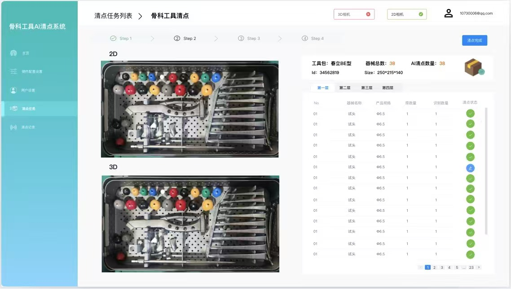
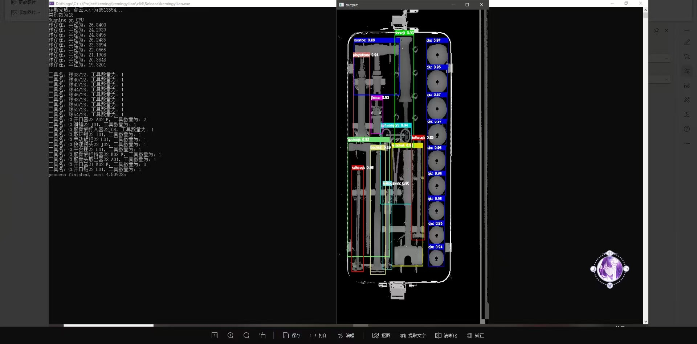
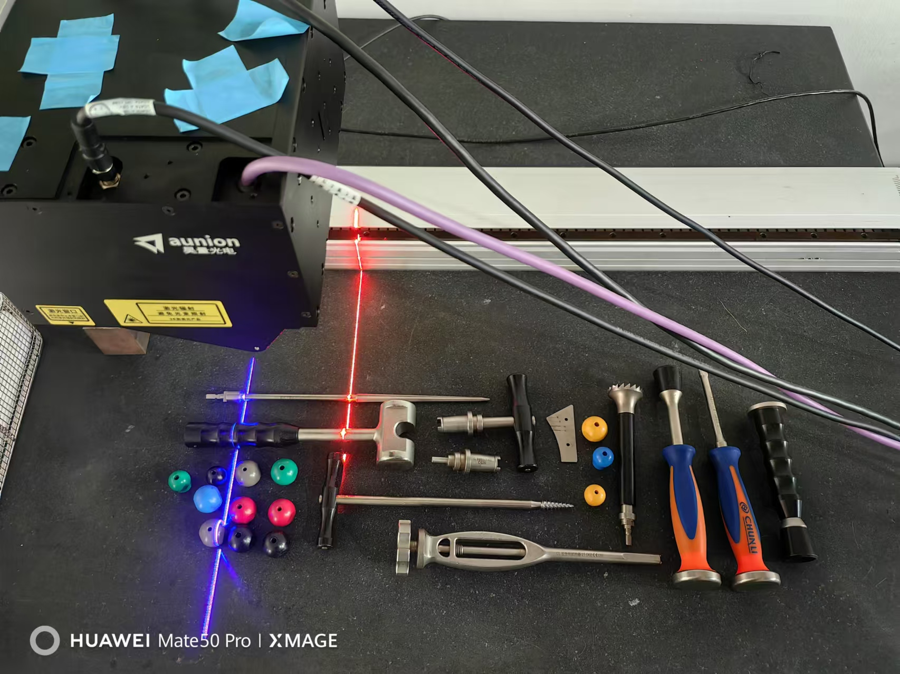
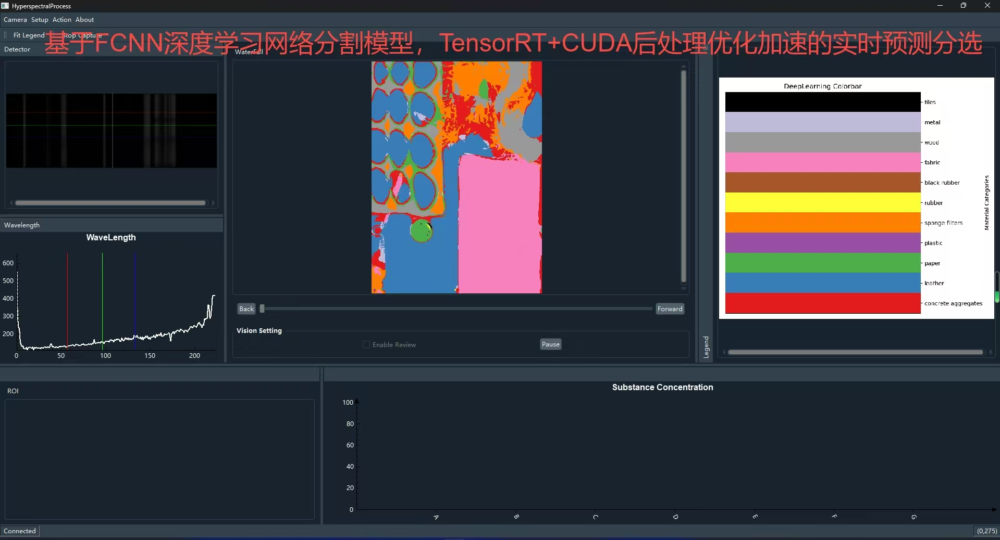
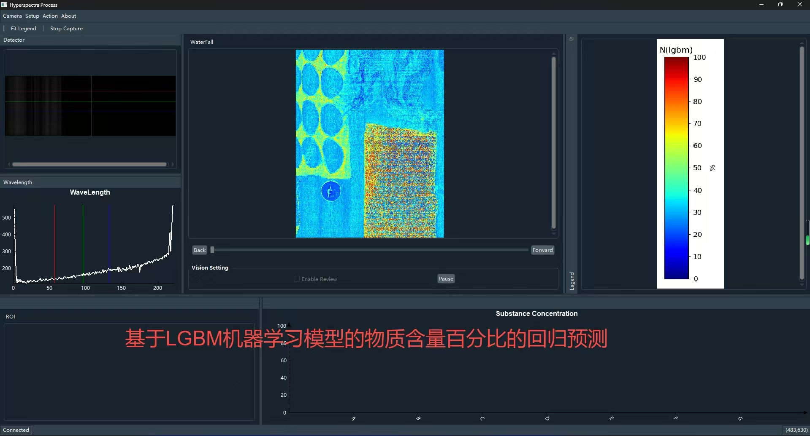
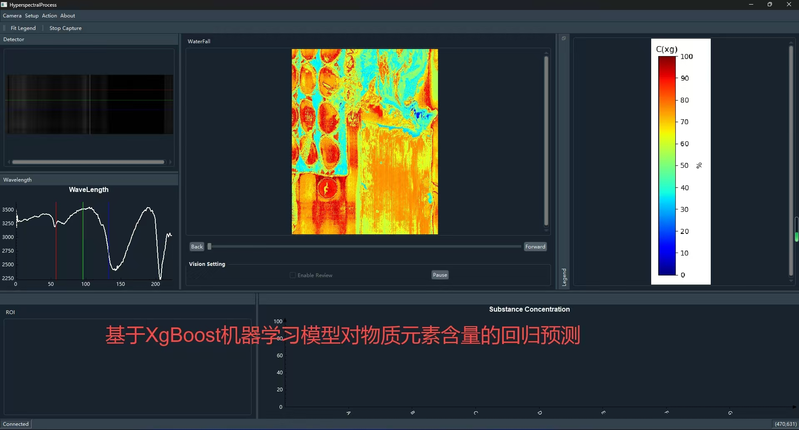
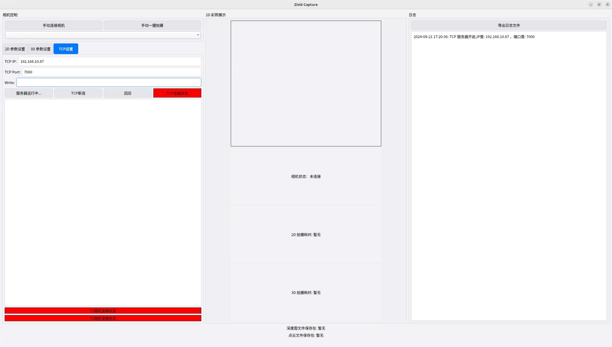

基于三维点云的手术器械识别
根据客户要求总结了一个基于三维点云的手术器械识别方案，用算法对3D点云数据做合理的分割，将手术器械部分点云和箱体部分点云分割后，去除箱体部分。
基于统计滤波的思想对离群噪点进行合理剔除，以提高点云的质量。对目标点云和模板点云进行全局粗配准和细配准，得到两者之间的变换矩阵或对应关系，根据输出的参数确定型号。
通过匹配点对的个数、变换矩阵、配准拟合度分数、匹配/差异点的个数，并输出点云可视化图、匹配对应点可视化图、差异点可视化图。但是这个方案由于点云计算耗时较慢而没被弃置。
改用基于YoloV5框架的深度学习识别点云深度图的方案，解决了上述的难点。该项目我也负责了所有3D建模的mesh图绘制工作，学习并在实际项目中有针对性地使用了泊松Poisson重建算法和Ball Pivoting重建算法，对不同几何特征的物体做三维重建。



高光谱深度学习模型开发
负责调研适合高光谱深度学习的模型，根据理解编写基于FCNN的模型并训练了大量数据，并基于Python和C++都做了分割演示。
基于实时性分析的需求有针对性地学习了Onnx和TensorRT相关内容，掌握了C++的深度学习高性能部署，利用GPU的高速并行计算能力充分满足实时性。
实时推理帧率从原本的0.3FPS提高到了实时的30FPS，达到了实时性能要求。并配合将深度学习算法封装移植到软件里。十月初深度学习算法开发基本已经结束，我继续参与到机器学习算法移植的开发中。
我将基于XGBoost和LightGBM的机器学习算法库通过CMake的方式编译为C++可以使用的dll，自学有关C++机器学习算法部署的知识，成功开发了高光谱机器学习算法预测回归的功能，并且在这个过程中也写出了Savitsky-Golay滤波算法、一阶差分算法等预处理，满足了客户的要求。
在这个过程中我熟练掌握了OpenCV的核心库，使用但不限于包括矩阵运算、放大缩小、颜色映射、归一化等操作。后面我也成功将这些算法封装成函数移植到了软件中。该项目顺利验收。



基于ZIVID TWO+ M60相机的二次开发上位机操作软件
基于ZIVID TWO+ M60相机编写了一个二次开发的上位机操作软件，采用QT5框架，可以控制相机进行手动拍照，也可以基于TCP通讯指令进行自动拍照，然后基于HTTP协议将拍摄得到的数据文件上传到对应的算法服务器。
本人独立完成了全部软件的开发。该软件可以手动调整相机参数进行拍照测试，也可以作为TCP服务器接受客户端的连接，根据收到的指令解析出触发命令的关键词，并进行相应的参数调整、拍照、上传等动作。
该软件还可以记录所有操作的日志详情，并支持一键导出本地，便于后续的错误分析。
